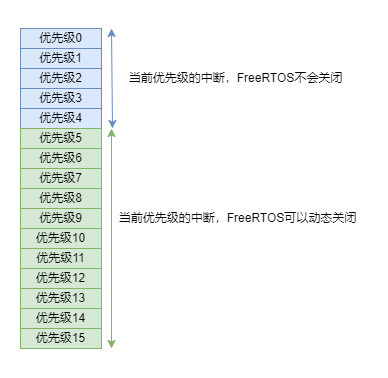
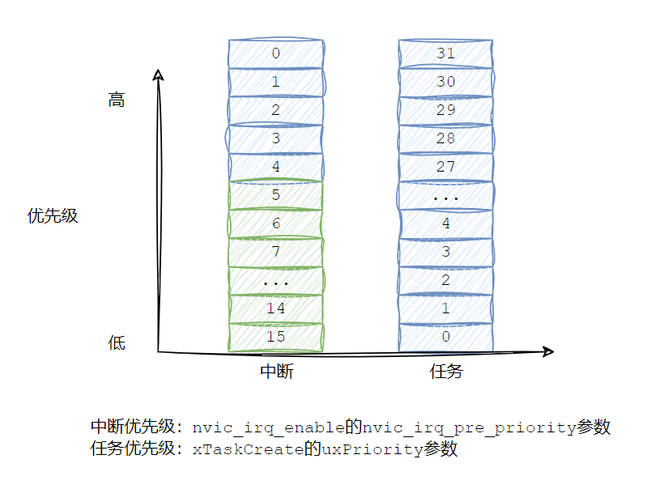

<!DOCTYPE lake>
<h2 data-lake-id="mgzVy" id="mgzVy"><span data-lake-id="ubf0540de" id="ubf0540de">学习目标</span></h2><ol list="u466a8c43"><li data-lake-id="u2bfe7fac" fid="u5d97b34a" id="u2bfe7fac"><span data-lake-id="u24892bba" id="u24892bba">理解中断概念</span></li><li data-lake-id="u0f0289ce" fid="u5d97b34a" id="u0f0289ce"><span data-lake-id="uf528de60" id="uf528de60">了解FreeRTOS的中断优先级</span></li><li data-lake-id="u5be8c3b4" fid="u5d97b34a" id="u5be8c3b4"><span data-lake-id="u3b213072" id="u3b213072">了解中断的开和关</span></li></ol><h2 data-lake-id="wC8yK" id="wC8yK"><span data-lake-id="u1d7b4d3d" id="u1d7b4d3d">学习内容</span></h2><h3 data-lake-id="Xu80d" id="Xu80d"><span data-lake-id="ua02d6f0d" id="ua02d6f0d">中断概念</span></h3><p data-lake-id="uea55d1a1" id="uea55d1a1"><span data-lake-id="uc094bb0d" id="uc094bb0d">中断是计算机系统中一种重要的事件驱动机制，用于在特定条件下打断正在执行的程序，并跳转到预定义的中断处理程序中执行特定的操作。当发生中断时，处理器会立即中止当前正在执行的指令，保存当前的执行状态，并执行相应的中断处理程序。</span></p><p data-lake-id="u46d95a94" id="u46d95a94"><span data-lake-id="ueba04180" id="ueba04180">中断可以由多种事件触发，例如硬件设备的状态改变、定时器溢出、外部信号等。常见的中断事件包括键盘输入、鼠标移动、网络数据到达等。</span></p><p data-lake-id="u653e30da" id="u653e30da"><span data-lake-id="u307420f7" id="u307420f7">中断的作用是实现对实时事件的及时响应。通过中断，计算机系统能够在发生特定事件时立即中断当前任务，执行与该事件相关的处理程序，以确保及时处理和响应事件。中断能够提高系统的实时性、可靠性和可处理性。</span></p><p data-lake-id="ud84af0c4" id="ud84af0c4"><span data-lake-id="u96cdea0c" id="u96cdea0c">中断的处理过程包括以下步骤：</span></p><ol list="u65ddf6ca"><li data-lake-id="ubdb4f6db" fid="ufd31fbed" id="ubdb4f6db"><span data-lake-id="u2d5e7361" id="u2d5e7361">中断触发：某个事件触发中断，如硬件设备发出中断请求信号。</span></li><li data-lake-id="ub1c6c830" fid="ufd31fbed" id="ub1c6c830"><span data-lake-id="u91a317de" id="u91a317de">中断响应：处理器检测到中断请求，并立即中止当前执行的指令。</span></li><li data-lake-id="u094e568e" fid="ufd31fbed" id="u094e568e"><span data-lake-id="u5fcb6390" id="u5fcb6390">保存现场：处理器保存当前的执行状态（如程序计数器、寄存器等），以便在中断处理完成后能够恢复执行。</span></li><li data-lake-id="uac19605c" fid="ufd31fbed" id="uac19605c"><span data-lake-id="u141b38dc" id="u141b38dc">中断服务程序执行：处理器跳转到预定义的中断服务程序（ISR），执行与中断相关的操作。</span></li><li data-lake-id="uabab16f0" fid="ufd31fbed" id="uabab16f0"><span data-lake-id="udb8e7b85" id="udb8e7b85">中断处理完成：中断服务程序执行完成后，处理器恢复之前保存的执行状态，并继续执行原来的程序。</span></li></ol><p data-lake-id="ue4f5c38e" id="ue4f5c38e"><span data-lake-id="uc9226049" id="uc9226049">通过合理使用中断，可以实现并发处理、异步事件处理和实时响应，提高系统的性能和可靠性。中断在各种计算机系统中广泛应用，包括嵌入式系统、操作系统和实时系统等。</span></p><h3 data-lake-id="SDFit" id="SDFit"><span data-lake-id="u5b0f4fa0" id="u5b0f4fa0">ARM中的中断优先级</span></h3><p data-lake-id="u1dd7b2c9" id="u1dd7b2c9"><span data-lake-id="uda17eed6" id="uda17eed6">ARM Cortex-M 使用了 4 位宽的寄存器来配置中断的优先等级，这个寄存器就是中断优先级配置寄存器。</span></p><p data-lake-id="u951e8b41" id="u951e8b41"><span data-lake-id="u06a9ce70" id="u06a9ce70">GD32中，分为抢占优先级和子优先级。</span></p><table class="lake-table" data-lake-id="T5L9m" id="T5L9m" margin="true" style="width: 584px" width-mode="contain"><colgroup><col width="158"/><col width="213"/><col width="213"/></colgroup><tbody><tr data-lake-id="uf36466c3" id="uf36466c3"><td data-lake-id="u00422b1c" id="u00422b1c" style="vertical-align: middle"><p data-lake-id="u2c5de563" id="u2c5de563" style="text-align: center"><span data-lake-id="u05a586ea" id="u05a586ea">分组</span></p></td><td data-lake-id="ub7a76d90" id="ub7a76d90" style="vertical-align: middle"><p data-lake-id="ua91997e1" id="ua91997e1" style="text-align: center"><span data-lake-id="u3cdb50eb" id="u3cdb50eb">抢占优先级</span></p></td><td data-lake-id="u1ce7f41a" id="u1ce7f41a" style="vertical-align: middle"><p data-lake-id="u00b9e59e" id="u00b9e59e" style="text-align: center"><span data-lake-id="ufbdd0bb1" id="ufbdd0bb1">响应优先级</span></p></td></tr><tr data-lake-id="u8670c8dd" id="u8670c8dd"><td data-lake-id="ud4e46075" id="ud4e46075" style="vertical-align: middle"><p data-lake-id="ufd4d32d8" id="ufd4d32d8" style="text-align: center"><span data-lake-id="uff6048d0" id="uff6048d0">分组0</span></p></td><td data-lake-id="u1045d601" id="u1045d601" style="vertical-align: middle"><p data-lake-id="ub9f3c4d0" id="ub9f3c4d0" style="text-align: center"><span data-lake-id="u700cfd05" id="u700cfd05">0（可取值为0）</span></p></td><td data-lake-id="ua35d850f" id="ua35d850f" style="vertical-align: middle"><p data-lake-id="ue9c82e94" id="ue9c82e94" style="text-align: center"><span data-lake-id="uf5e19ad6" id="uf5e19ad6">4（可取值为0到15）</span></p></td></tr><tr data-lake-id="u84d3a014" id="u84d3a014"><td data-lake-id="u7d7515ae" id="u7d7515ae" style="vertical-align: middle"><p data-lake-id="ub4cb673e" id="ub4cb673e" style="text-align: center"><span data-lake-id="uc43ea7ee" id="uc43ea7ee">分组1</span></p></td><td data-lake-id="u95d11694" id="u95d11694" style="vertical-align: middle"><p data-lake-id="u72075b33" id="u72075b33" style="text-align: center"><span data-lake-id="uc67fdc0d" id="uc67fdc0d">1（可取值为0到1）</span></p></td><td data-lake-id="u5b2bb35d" id="u5b2bb35d" style="vertical-align: middle"><p data-lake-id="u3b6f140f" id="u3b6f140f" style="text-align: center"><span data-lake-id="u6a2d1a49" id="u6a2d1a49">3（可取值为0到7）</span></p></td></tr><tr data-lake-id="u1f60f3cd" id="u1f60f3cd"><td data-lake-id="ud4fd534b" id="ud4fd534b" style="vertical-align: middle"><p data-lake-id="uaac07c96" id="uaac07c96" style="text-align: center"><span data-lake-id="ud5d0b13a" id="ud5d0b13a">分组2</span></p></td><td data-lake-id="u149f06ff" id="u149f06ff" style="vertical-align: middle"><p data-lake-id="u454ee3ff" id="u454ee3ff" style="text-align: center"><span data-lake-id="u0843609b" id="u0843609b">2（可取值为0到3）</span></p></td><td data-lake-id="u49681f38" id="u49681f38" style="vertical-align: middle"><p data-lake-id="uf4ee4184" id="uf4ee4184" style="text-align: center"><span data-lake-id="u94f2f607" id="u94f2f607">2（可取值为0到3）</span></p></td></tr><tr data-lake-id="ud099beae" id="ud099beae"><td data-lake-id="u239abd6f" id="u239abd6f" style="vertical-align: middle"><p data-lake-id="ud64d5e49" id="ud64d5e49" style="text-align: center"><span data-lake-id="ubfd60372" id="ubfd60372">分组3</span></p></td><td data-lake-id="udfdcc3fa" id="udfdcc3fa" style="vertical-align: middle"><p data-lake-id="u7059f919" id="u7059f919" style="text-align: center"><span data-lake-id="ude26d7b5" id="ude26d7b5">3（可取值为0到7）</span></p></td><td data-lake-id="u270ace8c" id="u270ace8c" style="vertical-align: middle"><p data-lake-id="uf26589b3" id="uf26589b3" style="text-align: center"><span data-lake-id="u0680fe9e" id="u0680fe9e">1（可取值为0到1）</span></p></td></tr><tr data-lake-id="ud6aba1c6" id="ud6aba1c6"><td data-lake-id="ue293e332" id="ue293e332" style="vertical-align: middle"><p data-lake-id="ub7766c03" id="ub7766c03" style="text-align: center"><span data-lake-id="u1345e040" id="u1345e040">分组4</span></p></td><td data-lake-id="u57c817e3" id="u57c817e3" style="vertical-align: middle"><p data-lake-id="ue7d3fffd" id="ue7d3fffd" style="text-align: center"><span data-lake-id="ue093bad6" id="ue093bad6">4（可取值为0到15）</span></p></td><td data-lake-id="u9e176e5b" id="u9e176e5b" style="vertical-align: middle"><p data-lake-id="uf165917f" id="uf165917f" style="text-align: center"><span data-lake-id="u4ad132d6" id="u4ad132d6">0（可取值为0）</span></p></td></tr></tbody></table><p data-lake-id="ua15a696c" id="ua15a696c"><span data-lake-id="uaed1dea1" id="uaed1dea1">通常我们在代码中来进行配置：</span></p><span class="yuque-card-unsupported">[codeblock]</span><p data-lake-id="u95f9add7" id="u95f9add7"><span data-lake-id="ub07aacda" id="ub07aacda">全局中断的意思是，把全局的中断优先级大概定义到一个区间，具体到哪种类型的中断，自行去配置合适的优先级。因此，我们对于一些中断源可以通过以下代码来配置优先级：</span></p><span class="yuque-card-unsupported">[codeblock]</span><p data-lake-id="u8c5c101b" id="u8c5c101b"><span data-lake-id="u5450bda1" id="u5450bda1">上面中的全局中断配置，配置为抢占优先级为4，响应优先级为0，那么就把具体中断源的区间给框定了。抢占优先级取值介于0到15，响应优先级只能为0。因此，上面配置具体中断源优先级为5和0，在全局中断源的范畴内。当然你设置一个范围不在范畴内，是不生效，或者会出现其他问题。</span></p><p data-lake-id="ue1dde42d" id="ue1dde42d"><span data-lake-id="u7e2cf01d" id="u7e2cf01d">通常在FreeRTOS配置外设的中断优先级都在5及以上 (configLIBRARY_MAX_SYSCALL_INTERRUPT_PRIORITY)</span></p><p data-lake-id="uc160289d" id="uc160289d"><br/></p><h3 data-lake-id="qNLC9" id="qNLC9"><span data-lake-id="u4714bbb2" id="u4714bbb2">FreeRTOS的中断优先级</span></h3><p data-lake-id="uc4baeeae" id="uc4baeeae"><span data-lake-id="uc5a78179" id="uc5a78179">在</span><code data-lake-id="u5e66b301" id="u5e66b301"><span data-lake-id="ue2c4b7b3" id="ue2c4b7b3">FreeRTOSConfig.h</span></code><span data-lake-id="u4cc6b393" id="u4cc6b393">中，</span><code data-lake-id="uf28a2d6c" id="uf28a2d6c"><span data-lake-id="u820c2031" id="u820c2031">configLIBRARY_MAX_SYSCALL_INTERRUPT_PRIORITY</span></code><span data-lake-id="u55eb4767" id="u55eb4767">配置了中断优先级:</span></p><span class="yuque-card-unsupported">[codeblock]</span><p data-lake-id="u97040713" id="u97040713"><span data-lake-id="u0e8deea3" id="u0e8deea3">默认位置为5。</span></p><p data-lake-id="u5484f0a5" id="u5484f0a5"><span data-lake-id="u5daf2c8b" id="u5daf2c8b">在GD32中，优先级的数值越小，优先级越高。通过优先级分组可以知道，优先级分为0到15个等级。那么FreeRTOS中的这个优先级是什么含义呢？</span></p><p data-lake-id="uf91ce6d3" id="uf91ce6d3"></p><p data-lake-id="uef6b72e4" id="uef6b72e4"><span data-lake-id="u59ad7af5" id="u59ad7af5">开启中断和关闭中断：</span></p><span class="yuque-card-unsupported">[codeblock]</span><h3 data-lake-id="DEHmn" id="DEHmn"><span data-lake-id="u72911f45" id="u72911f45">优先级配置注意</span></h3><p data-lake-id="u2caa6462" id="u2caa6462"><span data-comment-id="39515444" data-lake-id="uf3ab3f1c" id="uf3ab3f1c">低于或等于</span><code data-lake-id="u4726357e" id="u4726357e"><span data-comment-id="39515444" data-lake-id="udd71cf64" id="udd71cf64">configLIBRARY_MAX_SYSCALL_INTERRUPT_PRIORITY</span></code><span data-comment-id="39515444" data-lake-id="u62291db2" id="u62291db2"> 优先级的中断函数（数值越大，优先级越低），FreeRTOS的API函数才能对其生效。例如</span><code data-lake-id="u18613e8a" id="u18613e8a"><span data-comment-id="39515444" data-lake-id="u5a5aa078" id="u5a5aa078">configLIBRARY_MAX_SYSCALL_INTERRUPT_PRIORITY</span></code><span data-comment-id="39515444" data-lake-id="uf82e3a66" id="uf82e3a66">为5，则中断函数配置的参数必须为[5, 15]的任意值。（所有优先级均为抢占优先级时）</span></p><p data-lake-id="u73080821" id="u73080821"><span data-lake-id="u8686452a" id="u8686452a">​</span><br/></p><h3 data-lake-id="vW6lj" id="vW6lj"><span data-lake-id="ua2b637e2" id="ua2b637e2">中断优先级和任务优先级</span></h3><p data-lake-id="u9fa1fc46" id="u9fa1fc46"></p><p data-lake-id="u0c353466" id="u0c353466"><span data-lake-id="ub5532242" id="ub5532242">​</span><br/></p><h3 data-lake-id="LeffN" id="LeffN"><span data-lake-id="ue7c5aea5" id="ue7c5aea5">示例</span></h3><ol list="ueae908c1"><li data-lake-id="ucc7e9290" fid="u2d184263" id="ucc7e9290"><span data-lake-id="ue785b3c2" id="ue785b3c2">创建timer中断，每秒打印数据</span></li><li data-lake-id="ue333efad" fid="u2d184263" id="ue333efad"><span data-lake-id="ud6f679b9" id="ud6f679b9">创建任务，扫描按键事件</span></li><li data-lake-id="u78e01024" fid="u2d184263" id="u78e01024"><span data-lake-id="u4190fcef" id="u4190fcef">当按键按下，关闭所有中断，当按键再次按下，开启中断</span></li><li data-lake-id="uba905e8e" fid="u2d184263" id="uba905e8e"><span data-lake-id="u2c824c5e" id="u2c824c5e">观察效果</span></li></ol><blockquote class="lake-alert lake-alert-danger" data-lake-id="ua080ccae" id="ua080ccae"><p data-lake-id="u6aa3a49e" id="u6aa3a49e"><span data-lake-id="ued63087a" id="ued63087a">注意：vTaskDelay和delay_1ms的有区别</span></p></blockquote><span class="yuque-card-unsupported">[codeblock]</span><blockquote data-lake-id="u8137b1ab" id="u8137b1ab"><p data-lake-id="ue9234284" id="ue9234284"><code data-lake-id="u8b76469d" id="u8b76469d"><span data-lake-id="ua54a66b7" id="ua54a66b7">vTaskDelay</span></code><span data-lake-id="ua53dfd48" id="ua53dfd48">内部会自动启用中断</span></p></blockquote><h2 data-lake-id="l0dgH" id="l0dgH"><span data-lake-id="u2e2959fe" id="u2e2959fe">练习题</span></h2><ol list="ua9d0b053"><li data-lake-id="uc598b5c4" fid="uf3e9ffc1" id="uc598b5c4"><span data-lake-id="ue3f30818" id="ue3f30818">动态修改串口中断的开和关。</span></li></ol><p data-lake-id="uecedc52f" id="uecedc52f"><span data-lake-id="ubf601e29" id="ubf601e29">​</span><br/></p><p data-lake-id="u56071e18" id="u56071e18"><span data-lake-id="u164a13ec" id="u164a13ec">​</span><br/></p><p data-lake-id="uc352e8bb" id="uc352e8bb"><span data-lake-id="u6bc9cc37" id="u6bc9cc37">​</span><br/></p>